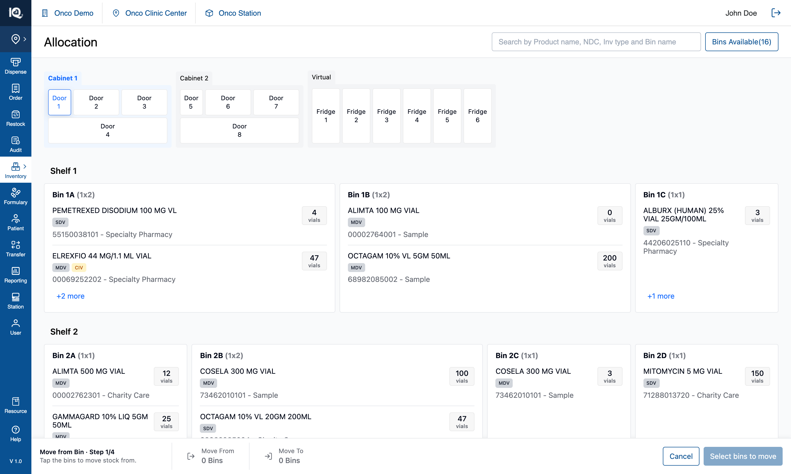
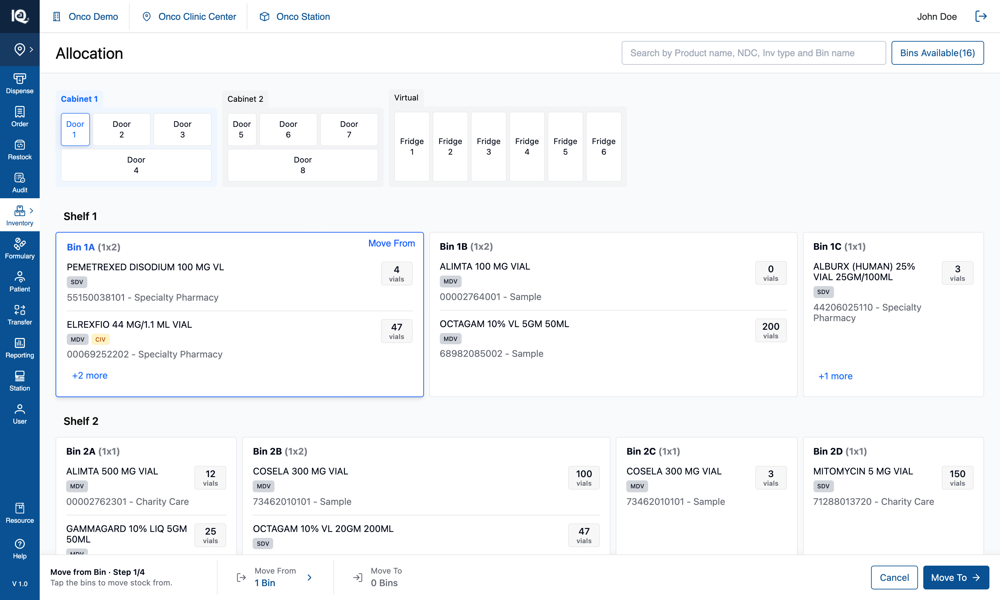
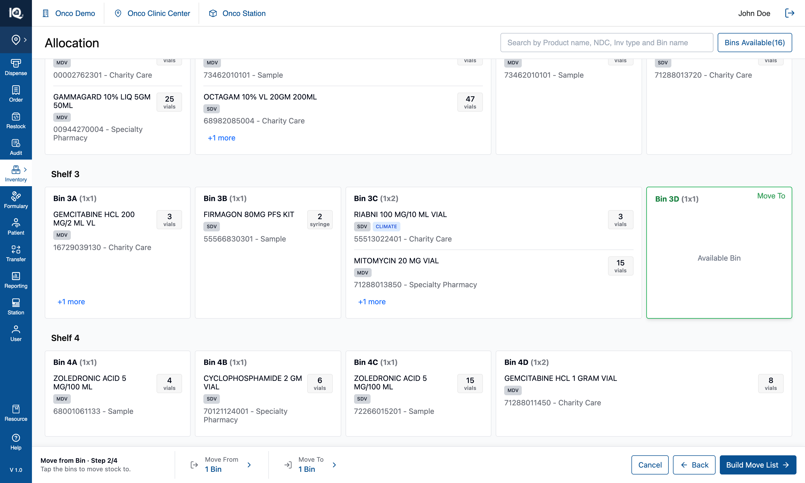
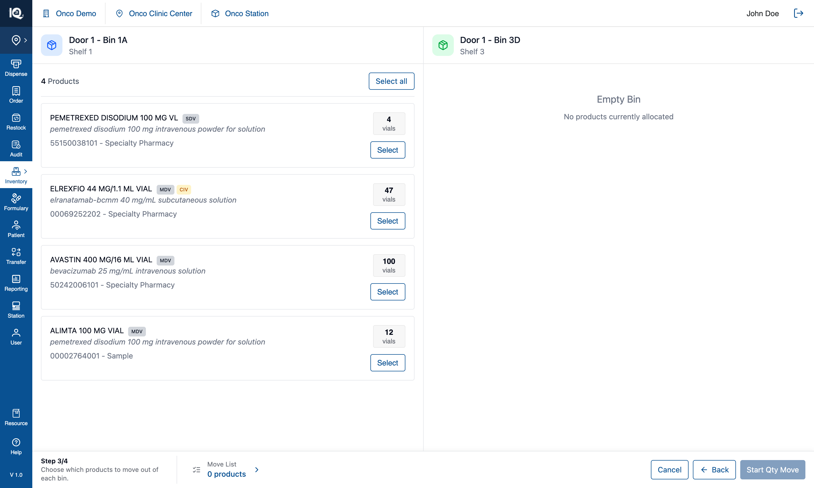
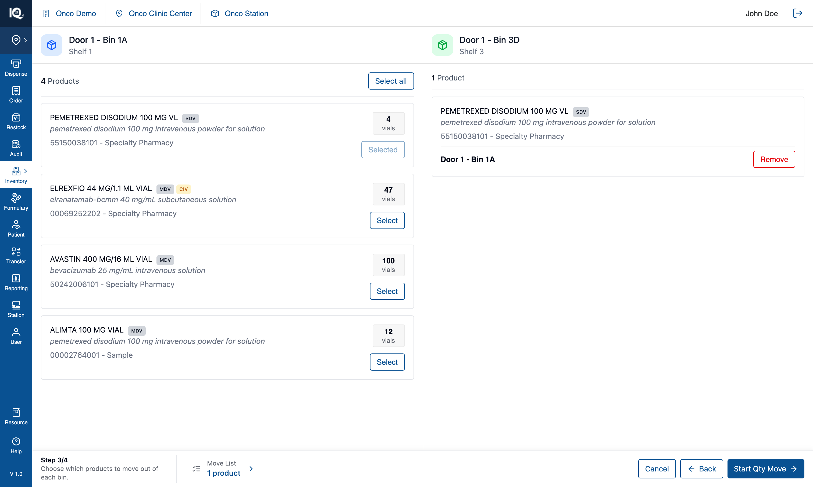
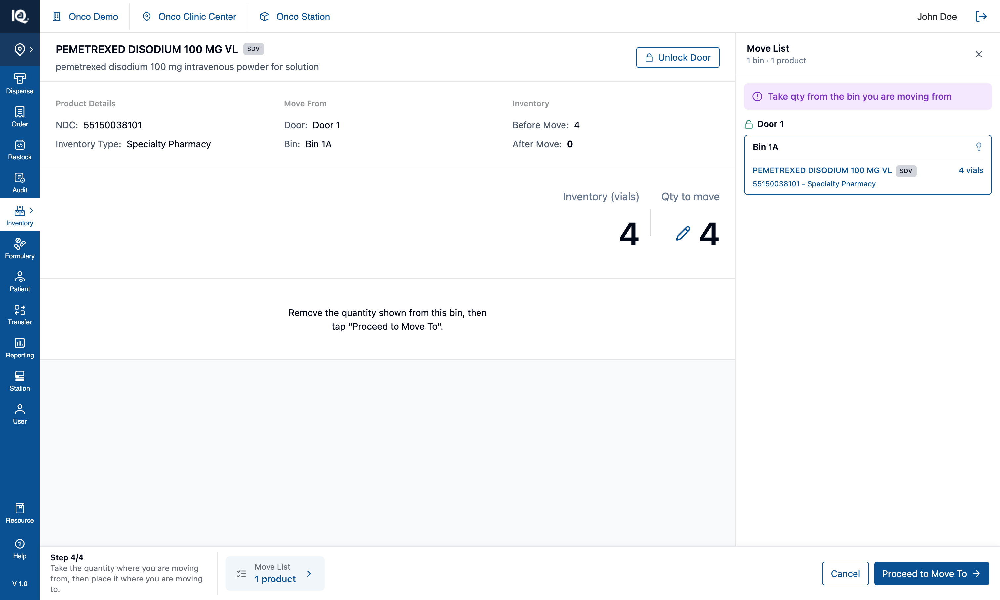
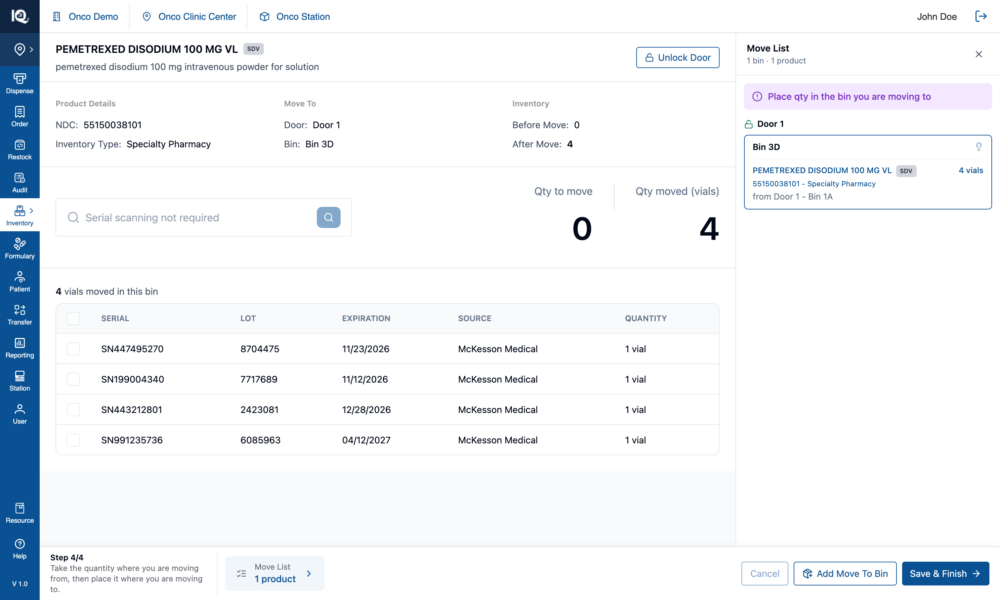
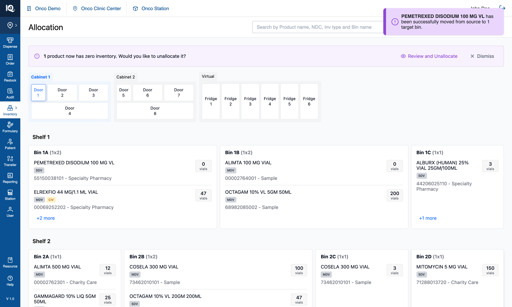

04 — Move from Bin
# 04 — Move from Bin
**Surface:** `Allocate/Move` › **Move from Bin** — a four-step, full-page pipeline
**Job:** move stock out of one or more bins into one or more other bins
**Prototype files:** `PipelineSteps.tsx`, `PipelineFooter.tsx`, `ChangeAllocationModal.tsx`, `QuantitySelectionPage.tsx`, `TargetBinSerialScanPage.tsx`, `MoveSummaryPanel.tsx`, `useInventoryState.ts`
**Captured:** 2026-08-10 · seed data unmodified · screenshots at 1512×908
Read [00-Introduction.md](00-Introduction.md) first. [05-Move-from-Product.md](05-Move-from-Product.md)
is the same pipeline entered through the other door — only step ① differs, so that document covers step
① and refers back here for the rest.
**Station level only.** Moving stock means opening a door and moving vials by hand, so this workflow is
withheld at clinic level — its menu entry is not rendered there. See
[07-Station-Switcher.md](07-Station-Switcher.md).
---
## The shape of the pipeline
Four steps, each a **full page**, all carrying the same footer:
```
① Bin the cabinet page — pick the bins to move from
↓ Move To →
② Target the same page, step 2 — pick the bins to move to
↓ Build Move List →
③ Review one card per source bin — choose which products leave each
↓ Start Qty Move →
④ Move take the quantity at each source (QuantitySelectionPage)
place it in the target, scanning if required (TargetBinSerialScanPage)
↓ Save & Finish → the move commits
```
Three things about that shape are deliberate:
- **Step ① is named for the unit** — `Bin` here, `Product` in the other kind. The operator chose the
unit in the menu, so the step carrying it out says the same word back.
- **Step ④ spans two screens and stays `Step 4/4` across both.** Taking stock at the source and placing
it in the target are two halves of one errand; a separate "Place" step misrepresented them as two.
- **Review is a page, not a modal.** It was a dialog, which read as a different kind of surface from the
pages either side of it.
---
## Step ① — pick the bins to move from {copy}

The cabinet stays exactly as it is in View Mode, with a footer added: `Move from Bin · Step 1/4` and the
instruction *"Tap the bins to move stock from."* The two summary cells read `Move From 0 Bins` and
`Move To 0 Bins`, and the primary states its own requirement — **`Select bins to move`** — rather than
greying out silently.
From here the operator taps any stocked bin on any door. Tapping toggles, doors can be switched freely,
and the header search still works for locating a bin by name. Product rows inside the cards are inert:
in this kind of move the bin is the unit.

A picked bin takes a blue outline and a **`Move From`** badge, the summary cell becomes `1 Bin` in blue
with a chevron — tap it to open a panel listing what is selected — and the primary becomes **`Move To →`**.
Picking a bin does **not** commit its contents; which of its products actually leave is asked at step ③.
## Step ② — pick the bins to move to {copy}

The instruction changes to *"Tap the bins to move stock to."* and the primary again states its
requirement — `Select Bin to move` — until a bin is picked, then becomes **`Build Move List`**. A `Back`
button appears beside `Cancel`.
Target bins take a green outline and a **`Move To`** badge. A bin already chosen as a source is refused
with an explanation — *"This bin is one you are moving from, so it cannot also be moved to. Pick a
different bin."* — because stock would otherwise leave and arrive in the same place. An empty bin is a
perfectly good target: that is what the availability filter is for, and it stays usable here
([01-Bins-Available.md](01-Bins-Available.md) §2.5).
The primary is `Build Move List`, not "Review", because the list is still being assembled — step ③ is
where the operator says which products leave.
## Step ③ — choose which products leave each bin {copy}

A page of cards, one per source bin, each listing that bin's products with a **`Select`** button. The
footer drops the workflow prefix — by now the two kinds of move have converged — and reads
`Step 3/4 · Choose which products to move out of each bin.` The primary is **`Start Qty Move`**, and the
`Move List` cell beside it counts `0 products` until something is chosen.

`Select` becomes `Remove`, the footer counts `1 product`, and the Move List panel can be opened to see
what is moving where. The right-hand column of each card separates **arrivals** — what this move puts
in — from **what the bin already holds**, as two sections with their own counts, because a bin can
already stock the product being moved into it.
Nothing has changed in the cabinet yet. `Cancel` is still available and still costs nothing.
## Step ④ — take the quantity, then place it {copy}

The **take** half, one product at a time: the product's name and badges, `Move From` door and bin, the
bin's inventory `Before Move` and `After Move`, and the quantity to move — editable via the pencil,
defaulting to everything in the bin. The instruction is explicit about the physical act: *"Remove the
quantity shown from this bin, then tap 'Proceed to Move To'."*
Two controls exist for the cabinet itself: **`Unlock Door`** beside the product name, which re-sends the
unlock when the app believes it sent one and the hardware did not, and `Cancel`, which is available
**only until the first quantity leaves a source bin**.
The **Move List** panel on the right is the answer to "what am I carrying", and it is grouped the way the
operator walks: **door, then bin, then the products at that bin.** The door heading carries a lock or
unlock icon, the bin the operator is standing at has a blue border and a pulsing bulb — the screen's copy
of the cabinet lighting that bin — and each product row states the quantity leaving that bin on the name's
line, with its NDC and inventory type beneath. The row for the bin in hand is blue throughout and its
figure is **live**, tracking the quantity editor beside it, so the panel is a complete tally of the take
before `Proceed to Move To`. Bins the walk has not reached state no figure at all: a quantity here is a
claim about what has happened, and the screen is seeded with each transfer's full amount, so printing it
early would report stock taken out of a bin nobody has opened.
Above the list, a purple notice says which half of the errand is in hand — *"Take qty from the bin you are
moving from"* on this screen, *"Place qty in the bin you are moving to"* on the next. It is deliberately
not blue: blue in this panel means "the bin in your hands".
Two things the panel used to show and no longer does. A **collected total** sat beside the product name,
summing what the operator was carrying across the product's source bins; it was removed because every bin
already states its own figure, and on an allocation-only move the card read `0 vials` above two bins
reading `0 vials`. And the green **`Taken` / `Moved`** badges are currently switched off behind a flag
(§3.6) while the row layout is judged — with them off, progress is reported by position alone: the blue
border and the lit bulb.

The **place** half, same step number: `Move To` door and bin, the target's `Before`/`After`, a serial
scan box — here reading *"Serial scanning not required"* — and `Qty moved`. The items being placed are
listed with serial, lot, expiry and source.
Its Move List is grouped by door and bin too, by the **target** end, with each product row carrying a
`from Bin 1B, Bin 1C` line so the operator can tell that the vials in their hand belong here. That
grouping matches the walk: **the placement half is worked bin by bin**, so every bin behind one door is
finished before the next door opens and all the products going into one bin are done together. It was
product-major until 2026-08-18, which could send the operator back through a door they had closed — a
product placing into Door 1 and Door 3 put Door 3 in the middle of the walk, and the next product's Door 1
bin reopened Door 1. `node scripts/verify-placement-stops.mjs` pins the ordering.
A target bin the operator adds mid-move (`Add Move To Bin`) can be taken back off the move: a small
`Remove` beside its name in this panel, offered only while that bin was added in this step, holds nothing,
is not the product's last bin, and belongs to the product in hand.
Note the footer: **`Cancel` is now dimmed.** Every quantity has been taken by this point, so cancelling
would rest entirely on the operator putting stock back in the right bins, which nothing in the app can
verify. Tapping it explains rather than doing nothing. The primary is **`Save & Finish`**, and that is
the first control in the whole pipeline that changes inventory.

On commit the transfers are applied, the pipeline closes, and the operator is returned to the cabinet with
a toast confirming what moved where. The source row is now at **0 vials** — visible on Bin 1A above — and
because this move took everything out of it, the **zero-inventory banner** is raised over the cabinet:
*"1 product now has zero inventory. Would you like to unallocate it?"*, offering `Review and Unallocate`
or `Dismiss`.
That banner is deliberately a banner and not a modal. It used to open a dialog the instant a move
committed, interrupting the operator at the one moment they had just finished something, to ask a question
with no deadline: a product at 0 still holds its bin and can be unallocated whenever. **Dismissing is a
real answer** and clears the prompt rather than deferring it. The unallocation it offers is the same act
the product detail page provides ([00 §Product details](00-Introduction.md)).
A `Product moved` entry is written to History ([06-History.md](06-History.md)). Note the post-move scan
behind the banner walks **every** transfer's source bin, not just the ones that carried quantity, because a
whole batch can legitimately move nothing but the allocation.
---
## 1. Behaviour that spans the pipeline
### 1.1 The footer is the pipeline's only chrome
```
[ Step n/4 + instruction ] │ [ summary cell ] [ summary cell ] [ Cancel ] [ Back ] [ primary → ]
```
- The step cell is a fixed **240px**, so a longer instruction on one step does not shunt everything to
its right sideways on the next.
- **Steps ① and ② prefix the workflow** (`Move from Bin · Step 1/4`); steps ③ and ④ drop it, because by
then the two kinds have converged onto the same screens with the same rules.
- Summary cells go **blue with a chevron** the moment they hold something, and open a panel listing the
selection. A zero is counted in the mode's own unit.
- **A disabled primary states its requirement** in its own label. The exception is `Cancel`, whose label
is its identity — it keeps the word and explains via a toast when unavailable.
- `Cancel` and `Back` are blue secondary buttons, not red: leaving a flow discards a selection that was
never committed, which is a step back rather than a deletion.
### 1.2 Quantities are taken at every source before anything is carried
The quantity page walks **every** product itself and hands the whole move over once. It used to report
one product at a time, so four products meant four round trips over the same two doors.
Both screens walk in the **route's** order, not the order the transfers were created: the route is
planned once so that a move whose sources sit behind two doors never sends the operator back to a door
they had finished with. The page advances **one stop at a time** — the next group not skipped — because
a product with bins behind two doors has other products' bins between its own.
### 1.3 The quantity taken is not divided between targets
Each transfer out of one source carries that source's **whole** amount, and the placement screen assigns
the real shares as the operator scans into each bin. Anything reading a transfer's quantity as "the
amount for this one target" is wrong.
### 1.4 There is no Back inside step ④
Both step-④ screens had one and both were removed at the operator's request, along with the resume
machinery that existed to serve them. `Cancel` is the only exit and it discards the move; there is no
route back to Review without losing the selection.
### 1.5 A move can carry no stock at all
A product sitting at `quantity: 0` can be moved: what moves is the **allocation** — the source loses the
product record, the target gains it. The quantity page says *"This bin has no quantity to remove — the
allocation will still move"* and hides the editor. History classifies on the action, not on the quantity,
so this is still filed as a move rather than as a new allocation.
---
## 2. Implementation in the prototype
| Concern | Where |
|---|---|
| Step vocabulary and instructions | `PipelineSteps.tsx` — `TOTAL_PIPELINE_STEPS`, `instructionFor`, `workflowLabel`, `binTapRefusal` |
| Footer parts | `PipelineFooter.tsx` — `PipelineFooterShell`, `StepCell`, `SummaryCell`, `FooterButton` |
| Steps ① and ② | the cabinet page, via `handleBinClick`'s `changeAllocationMode` branches |
| Step ③ | `ChangeAllocationModal.tsx` (a page despite the name), `SourceProductCard`, `TargetProductCard` |
| Step ④ | `QuantitySelectionPage.tsx`, then `TargetBinSerialScanPage.tsx` |
| Route planning | `planMoveRoute` + `twoPhaseWalkOrder`, planned in `App` and handed to both screens |
| Move List panel | `MoveSummaryPanel.tsx` — presentational; each screen derives its own rows |
| Commit | `handleConfirmChangeAllocation` |
`node scripts/verify-quantity-walk.mjs` (15 assertions) pins the walk, including a skip whose product
has bins further along. `node scripts/verify-move-route.mjs` and `verify-step4-walk.mjs` cover the route.
The transfer record is `{ productId, fromBinId, toBinId, quantity, actionType, serialNumbers }`, staged
at `quantity: 0` with `actionType: 'move'`; the real amount is set on the quantity page.
---
## 3. Notes and open questions
### 3.1 Step ④'s take-then-place shape is specified to change
The current shape — take everything, then place everything — is documented for replacement by a
cabinet-aware route under a one-door-at-a-time constraint. `STEP4-GUIDANCE.md` in the repo root is that
specification, and **the sequencing half of it is now built**: both halves of step ④ walk bin by bin, so a
door's work is contiguous within each phase. What is not built is the **stop** as the unit of work — take
and place interleaved on one screen — so a door that both gives and receives is still opened twice. Anyone
implementing step ④ should read that document before treating the present behaviour as the target.
### 3.2 Serial numbers are counted, not validated
The scan box accepts serials and checks only that enough have been provided. No serial value is compared
against anything, despite the UI implying otherwise.
### 3.3 Two position counters are switched off, not decided
`Product n of N` and `Source/Target Bin n of N` are behind a flag, hidden at the operator's request while
the Move List panel is judged on its own. The cells and their side sheets stay wired. If the answer is
"off", they should be deleted rather than left behind a flag.
### 3.4 The `+N more` panel does not close when the step changes
Open it in step ① and it stays open through step ②, where its rows mean nothing.
### 3.5 One instruction serves both step-④ screens
`instructionFor` returns the same "take, then place" sentence on the take screen and the place screen.
Each screen's own header disambiguates, so this is tolerable rather than right.
### 3.6 The `Taken` / `Moved` badges are switched off, not decided
Both are behind `SHOW_DONE_BADGES` in `MoveSummaryPanel.tsx`, hidden at the operator's request while the
row layout is judged. Every rule about which lines may wear one is still in the code, so turning them back
on restores the behaviour — but if the answer is "keep them off" they should be deleted rather than left
behind a flag, and the panel's only progress signals then are the blue bin border and the lit bulb.
### 3.6 Test assertions worth writing
1. **Conservation:** for every product identity, total quantity across all bins is unchanged by a
committed move.
2. A bin chosen as a source cannot be chosen as a target, and the refusal explains why.
3. Review offers, for each source bin, only the products actually picked for that bin.
4. The quantity page visits every non-skipped stop exactly once, in route order, and never leapfrogs.
5. `Cancel` is available at every stage up to the first taken quantity and unavailable after it.
6. A move that empties a source bin leaves the product row at 0 and the bin **not** available until it is
unallocated.
7. A move of a 0-quantity product relocates the allocation and is filed as a move, not an allocation.
Surface: Allocate/Move › Move from Bin — a four-step, full-page pipeline Job: move stock out of one or more bins into one or more other bins Prototype files: PipelineSteps.tsx, PipelineFooter.tsx, ChangeAllocationModal.tsx, QuantitySelectionPage.tsx, TargetBinSerialScanPage.tsx, MoveSummaryPanel.tsx, useInventoryState.ts Captured: 2026-08-10 · seed data unmodified · screenshots at 1512×908
Read 00-Introduction.md first. 05-Move-from-Product.md is the same pipeline entered through the other door — only step ① differs, so that document covers step ① and refers back here for the rest.
Station level only. Moving stock means opening a door and moving vials by hand, so this workflow is withheld at clinic level — its menu entry is not rendered there. See 07-Station-Switcher.md.
Four steps, each a full page, all carrying the same footer:
① Bin the cabinet page — pick the bins to move from
↓ Move To →
② Target the same page, step 2 — pick the bins to move to
↓ Build Move List →
③ Review one card per source bin — choose which products leave each
↓ Start Qty Move →
④ Move take the quantity at each source (QuantitySelectionPage)
place it in the target, scanning if required (TargetBinSerialScanPage)
↓ Save & Finish → the move commitsThree things about that shape are deliberate:
- Step ① is named for the unit —
Binhere,Productin the other kind. The operator chose the unit in the menu, so the step carrying it out says the same word back. - Step ④ spans two screens and stays
Step 4/4across both. Taking stock at the source and placing it in the target are two halves of one errand; a separate "Place" step misrepresented them as two. - Review is a page, not a modal. It was a dialog, which read as a different kind of surface from the pages either side of it.
## Step ① — pick the bins to move from  The cabinet stays exactly as it is in View Mode, with a footer added: `Move from Bin · Step 1/4` and the instruction *"Tap the bins to move stock from."* The two summary cells read `Move From 0 Bins` and `Move To 0 Bins`, and the primary states its own requirement — **`Select bins to move`** — rather than greying out silently. From here the operator taps any stocked bin on any door. Tapping toggles, doors can be switched freely, and the header search still works for locating a bin by name. Product rows inside the cards are inert: in this kind of move the bin is the unit.  A picked bin takes a blue outline and a **`Move From`** badge, the summary cell becomes `1 Bin` in blue with a chevron — tap it to open a panel listing what is selected — and the primary becomes **`Move To →`**. Picking a bin does **not** commit its contents; which of its products actually leave is asked at step ③.

The cabinet stays exactly as it is in View Mode, with a footer added: Move from Bin · Step 1/4 and the instruction "Tap the bins to move stock from." The two summary cells read Move From 0 Bins and Move To 0 Bins, and the primary states its own requirement — Select bins to move — rather than greying out silently.
From here the operator taps any stocked bin on any door. Tapping toggles, doors can be switched freely, and the header search still works for locating a bin by name. Product rows inside the cards are inert: in this kind of move the bin is the unit.

A picked bin takes a blue outline and a Move From badge, the summary cell becomes 1 Bin in blue with a chevron — tap it to open a panel listing what is selected — and the primary becomes Move To →. Picking a bin does not commit its contents; which of its products actually leave is asked at step ③.
## Step ② — pick the bins to move to  The instruction changes to *"Tap the bins to move stock to."* and the primary again states its requirement — `Select Bin to move` — until a bin is picked, then becomes **`Build Move List`**. A `Back` button appears beside `Cancel`. Target bins take a green outline and a **`Move To`** badge. A bin already chosen as a source is refused with an explanation — *"This bin is one you are moving from, so it cannot also be moved to. Pick a different bin."* — because stock would otherwise leave and arrive in the same place. An empty bin is a perfectly good target: that is what the availability filter is for, and it stays usable here ([01-Bins-Available.md](01-Bins-Available.md) §2.5). The primary is `Build Move List`, not "Review", because the list is still being assembled — step ③ is where the operator says which products leave.

The instruction changes to "Tap the bins to move stock to." and the primary again states its requirement — Select Bin to move — until a bin is picked, then becomes Build Move List. A Back button appears beside Cancel.
Target bins take a green outline and a Move To badge. A bin already chosen as a source is refused with an explanation — "This bin is one you are moving from, so it cannot also be moved to. Pick a different bin." — because stock would otherwise leave and arrive in the same place. An empty bin is a perfectly good target: that is what the availability filter is for, and it stays usable here (01-Bins-Available.md §2.5).
The primary is Build Move List, not "Review", because the list is still being assembled — step ③ is where the operator says which products leave.
## Step ③ — choose which products leave each bin  A page of cards, one per source bin, each listing that bin's products with a **`Select`** button. The footer drops the workflow prefix — by now the two kinds of move have converged — and reads `Step 3/4 · Choose which products to move out of each bin.` The primary is **`Start Qty Move`**, and the `Move List` cell beside it counts `0 products` until something is chosen.  `Select` becomes `Remove`, the footer counts `1 product`, and the Move List panel can be opened to see what is moving where. The right-hand column of each card separates **arrivals** — what this move puts in — from **what the bin already holds**, as two sections with their own counts, because a bin can already stock the product being moved into it. Nothing has changed in the cabinet yet. `Cancel` is still available and still costs nothing.

A page of cards, one per source bin, each listing that bin's products with a Select button. The footer drops the workflow prefix — by now the two kinds of move have converged — and reads Step 3/4 · Choose which products to move out of each bin. The primary is Start Qty Move, and the Move List cell beside it counts 0 products until something is chosen.

Select becomes Remove, the footer counts 1 product, and the Move List panel can be opened to see what is moving where. The right-hand column of each card separates arrivals — what this move puts in — from what the bin already holds, as two sections with their own counts, because a bin can already stock the product being moved into it.
Nothing has changed in the cabinet yet. Cancel is still available and still costs nothing.
## Step ④ — take the quantity, then place it  The **take** half, one product at a time: the product's name and badges, `Move From` door and bin, the bin's inventory `Before Move` and `After Move`, and the quantity to move — editable via the pencil, defaulting to everything in the bin. The instruction is explicit about the physical act: *"Remove the quantity shown from this bin, then tap 'Proceed to Move To'."* Two controls exist for the cabinet itself: **`Unlock Door`** beside the product name, which re-sends the unlock when the app believes it sent one and the hardware did not, and `Cancel`, which is available **only until the first quantity leaves a source bin**. The **Move List** panel on the right is the answer to "what am I carrying", and it is grouped the way the operator walks: **door, then bin, then the products at that bin.** The door heading carries a lock or unlock icon, the bin the operator is standing at has a blue border and a pulsing bulb — the screen's copy of the cabinet lighting that bin — and each product row states the quantity leaving that bin on the name's line, with its NDC and inventory type beneath. The row for the bin in hand is blue throughout and its figure is **live**, tracking the quantity editor beside it, so the panel is a complete tally of the take before `Proceed to Move To`. Bins the walk has not reached state no figure at all: a quantity here is a claim about what has happened, and the screen is seeded with each transfer's full amount, so printing it early would report stock taken out of a bin nobody has opened. Above the list, a purple notice says which half of the errand is in hand — *"Take qty from the bin you are moving from"* on this screen, *"Place qty in the bin you are moving to"* on the next. It is deliberately not blue: blue in this panel means "the bin in your hands". Two things the panel used to show and no longer does. A **collected total** sat beside the product name, summing what the operator was carrying across the product's source bins; it was removed because every bin already states its own figure, and on an allocation-only move the card read `0 vials` above two bins reading `0 vials`. And the green **`Taken` / `Moved`** badges are currently switched off behind a flag (§3.6) while the row layout is judged — with them off, progress is reported by position alone: the blue border and the lit bulb.  The **place** half, same step number: `Move To` door and bin, the target's `Before`/`After`, a serial scan box — here reading *"Serial scanning not required"* — and `Qty moved`. The items being placed are listed with serial, lot, expiry and source. Its Move List is grouped by door and bin too, by the **target** end, with each product row carrying a `from Bin 1B, Bin 1C` line so the operator can tell that the vials in their hand belong here. That grouping matches the walk: **the placement half is worked bin by bin**, so every bin behind one door is finished before the next door opens and all the products going into one bin are done together. It was product-major until 2026-08-18, which could send the operator back through a door they had closed — a product placing into Door 1 and Door 3 put Door 3 in the middle of the walk, and the next product's Door 1 bin reopened Door 1. `node scripts/verify-placement-stops.mjs` pins the ordering. A target bin the operator adds mid-move (`Add Move To Bin`) can be taken back off the move: a small `Remove` beside its name in this panel, offered only while that bin was added in this step, holds nothing, is not the product's last bin, and belongs to the product in hand. Note the footer: **`Cancel` is now dimmed.** Every quantity has been taken by this point, so cancelling would rest entirely on the operator putting stock back in the right bins, which nothing in the app can verify. Tapping it explains rather than doing nothing. The primary is **`Save & Finish`**, and that is the first control in the whole pipeline that changes inventory.  On commit the transfers are applied, the pipeline closes, and the operator is returned to the cabinet with a toast confirming what moved where. The source row is now at **0 vials** — visible on Bin 1A above — and because this move took everything out of it, the **zero-inventory banner** is raised over the cabinet: *"1 product now has zero inventory. Would you like to unallocate it?"*, offering `Review and Unallocate` or `Dismiss`. That banner is deliberately a banner and not a modal. It used to open a dialog the instant a move committed, interrupting the operator at the one moment they had just finished something, to ask a question with no deadline: a product at 0 still holds its bin and can be unallocated whenever. **Dismissing is a real answer** and clears the prompt rather than deferring it. The unallocation it offers is the same act the product detail page provides ([00 §Product details](00-Introduction.md)). A `Product moved` entry is written to History ([06-History.md](06-History.md)). Note the post-move scan behind the banner walks **every** transfer's source bin, not just the ones that carried quantity, because a whole batch can legitimately move nothing but the allocation. ---

The take half, one product at a time: the product's name and badges, Move From door and bin, the bin's inventory Before Move and After Move, and the quantity to move — editable via the pencil, defaulting to everything in the bin. The instruction is explicit about the physical act: "Remove the quantity shown from this bin, then tap 'Proceed to Move To'."
Two controls exist for the cabinet itself: Unlock Door beside the product name, which re-sends the unlock when the app believes it sent one and the hardware did not, and Cancel, which is available only until the first quantity leaves a source bin.
The Move List panel on the right is the answer to "what am I carrying", and it is grouped the way the operator walks: door, then bin, then the products at that bin. The door heading carries a lock or unlock icon, the bin the operator is standing at has a blue border and a pulsing bulb — the screen's copy of the cabinet lighting that bin — and each product row states the quantity leaving that bin on the name's line, with its NDC and inventory type beneath. The row for the bin in hand is blue throughout and its figure is live, tracking the quantity editor beside it, so the panel is a complete tally of the take before Proceed to Move To. Bins the walk has not reached state no figure at all: a quantity here is a claim about what has happened, and the screen is seeded with each transfer's full amount, so printing it early would report stock taken out of a bin nobody has opened.
Above the list, a purple notice says which half of the errand is in hand — "Take qty from the bin you are moving from" on this screen, "Place qty in the bin you are moving to" on the next. It is deliberately not blue: blue in this panel means "the bin in your hands".
Two things the panel used to show and no longer does. A collected total sat beside the product name, summing what the operator was carrying across the product's source bins; it was removed because every bin already states its own figure, and on an allocation-only move the card read 0 vials above two bins reading 0 vials. And the green Taken / Moved badges are currently switched off behind a flag (§3.6) while the row layout is judged — with them off, progress is reported by position alone: the blue border and the lit bulb.

The place half, same step number: Move To door and bin, the target's Before/After, a serial scan box — here reading "Serial scanning not required" — and Qty moved. The items being placed are listed with serial, lot, expiry and source.
Its Move List is grouped by door and bin too, by the target end, with each product row carrying a from Bin 1B, Bin 1C line so the operator can tell that the vials in their hand belong here. That grouping matches the walk: the placement half is worked bin by bin, so every bin behind one door is finished before the next door opens and all the products going into one bin are done together. It was product-major until 2026-08-18, which could send the operator back through a door they had closed — a product placing into Door 1 and Door 3 put Door 3 in the middle of the walk, and the next product's Door 1 bin reopened Door 1. node scripts/verify-placement-stops.mjs pins the ordering.
A target bin the operator adds mid-move (Add Move To Bin) can be taken back off the move: a small Remove beside its name in this panel, offered only while that bin was added in this step, holds nothing, is not the product's last bin, and belongs to the product in hand.
Note the footer: Cancel is now dimmed. Every quantity has been taken by this point, so cancelling would rest entirely on the operator putting stock back in the right bins, which nothing in the app can verify. Tapping it explains rather than doing nothing. The primary is Save & Finish, and that is the first control in the whole pipeline that changes inventory.

On commit the transfers are applied, the pipeline closes, and the operator is returned to the cabinet with a toast confirming what moved where. The source row is now at 0 vials — visible on Bin 1A above — and because this move took everything out of it, the zero-inventory banner is raised over the cabinet: "1 product now has zero inventory. Would you like to unallocate it?", offering Review and Unallocate or Dismiss.
That banner is deliberately a banner and not a modal. It used to open a dialog the instant a move committed, interrupting the operator at the one moment they had just finished something, to ask a question with no deadline: a product at 0 still holds its bin and can be unallocated whenever. Dismissing is a real answer and clears the prompt rather than deferring it. The unallocation it offers is the same act the product detail page provides (00 §Product details).
A Product moved entry is written to History (06-History.md). Note the post-move scan behind the banner walks every transfer's source bin, not just the ones that carried quantity, because a whole batch can legitimately move nothing but the allocation.
[ Step n/4 + instruction ] │ [ summary cell ] [ summary cell ] [ Cancel ] [ Back ] [ primary → ]- The step cell is a fixed 240px, so a longer instruction on one step does not shunt everything to its right sideways on the next.
- Steps ① and ② prefix the workflow (
Move from Bin · Step 1/4); steps ③ and ④ drop it, because by then the two kinds have converged onto the same screens with the same rules. - Summary cells go blue with a chevron the moment they hold something, and open a panel listing the selection. A zero is counted in the mode's own unit.
- A disabled primary states its requirement in its own label. The exception is
Cancel, whose label is its identity — it keeps the word and explains via a toast when unavailable. CancelandBackare blue secondary buttons, not red: leaving a flow discards a selection that was never committed, which is a step back rather than a deletion.
The quantity page walks every product itself and hands the whole move over once. It used to report one product at a time, so four products meant four round trips over the same two doors.
Both screens walk in the route's order, not the order the transfers were created: the route is planned once so that a move whose sources sit behind two doors never sends the operator back to a door they had finished with. The page advances one stop at a time — the next group not skipped — because a product with bins behind two doors has other products' bins between its own.
Each transfer out of one source carries that source's whole amount, and the placement screen assigns the real shares as the operator scans into each bin. Anything reading a transfer's quantity as "the amount for this one target" is wrong.
Both step-④ screens had one and both were removed at the operator's request, along with the resume machinery that existed to serve them. Cancel is the only exit and it discards the move; there is no route back to Review without losing the selection.
A product sitting at quantity: 0 can be moved: what moves is the allocation — the source loses the product record, the target gains it. The quantity page says "This bin has no quantity to remove — the allocation will still move" and hides the editor. History classifies on the action, not on the quantity, so this is still filed as a move rather than as a new allocation.
| Concern | Where |
|---|---|
| Step vocabulary and instructions | PipelineSteps.tsx — TOTAL_PIPELINE_STEPS, instructionFor, workflowLabel, binTapRefusal |
| Footer parts | PipelineFooter.tsx — PipelineFooterShell, StepCell, SummaryCell, FooterButton |
| Steps ① and ② | the cabinet page, via handleBinClick's changeAllocationMode branches |
| Step ③ | ChangeAllocationModal.tsx (a page despite the name), SourceProductCard, TargetProductCard |
| Step ④ | QuantitySelectionPage.tsx, then TargetBinSerialScanPage.tsx |
| Route planning | planMoveRoute + twoPhaseWalkOrder, planned in App and handed to both screens |
| Move List panel | MoveSummaryPanel.tsx — presentational; each screen derives its own rows |
| Commit | handleConfirmChangeAllocation |
node scripts/verify-quantity-walk.mjs (15 assertions) pins the walk, including a skip whose product has bins further along. node scripts/verify-move-route.mjs and verify-step4-walk.mjs cover the route.
The transfer record is { productId, fromBinId, toBinId, quantity, actionType, serialNumbers }, staged at quantity: 0 with actionType: 'move'; the real amount is set on the quantity page.
The current shape — take everything, then place everything — is documented for replacement by a cabinet-aware route under a one-door-at-a-time constraint. STEP4-GUIDANCE.md in the repo root is that specification, and the sequencing half of it is now built: both halves of step ④ walk bin by bin, so a door's work is contiguous within each phase. What is not built is the stop as the unit of work — take and place interleaved on one screen — so a door that both gives and receives is still opened twice. Anyone implementing step ④ should read that document before treating the present behaviour as the target.
The scan box accepts serials and checks only that enough have been provided. No serial value is compared against anything, despite the UI implying otherwise.
Product n of N and Source/Target Bin n of N are behind a flag, hidden at the operator's request while the Move List panel is judged on its own. The cells and their side sheets stay wired. If the answer is "off", they should be deleted rather than left behind a flag.
Open it in step ① and it stays open through step ②, where its rows mean nothing.
instructionFor returns the same "take, then place" sentence on the take screen and the place screen. Each screen's own header disambiguates, so this is tolerable rather than right.
Both are behind SHOW_DONE_BADGES in MoveSummaryPanel.tsx, hidden at the operator's request while the row layout is judged. Every rule about which lines may wear one is still in the code, so turning them back on restores the behaviour — but if the answer is "keep them off" they should be deleted rather than left behind a flag, and the panel's only progress signals then are the blue bin border and the lit bulb.
- Conservation: for every product identity, total quantity across all bins is unchanged by a committed move.
- A bin chosen as a source cannot be chosen as a target, and the refusal explains why.
- Review offers, for each source bin, only the products actually picked for that bin.
- The quantity page visits every non-skipped stop exactly once, in route order, and never leapfrogs.
Cancelis available at every stage up to the first taken quantity and unavailable after it.- A move that empties a source bin leaves the product row at 0 and the bin not available until it is unallocated.
- A move of a 0-quantity product relocates the allocation and is filed as a move, not an allocation.